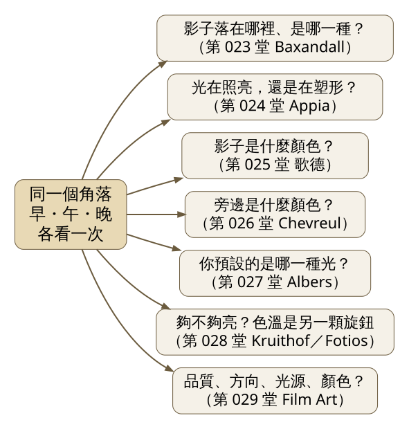
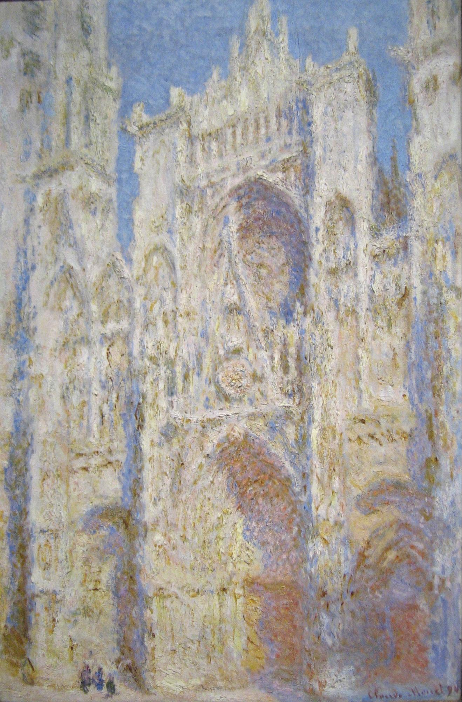
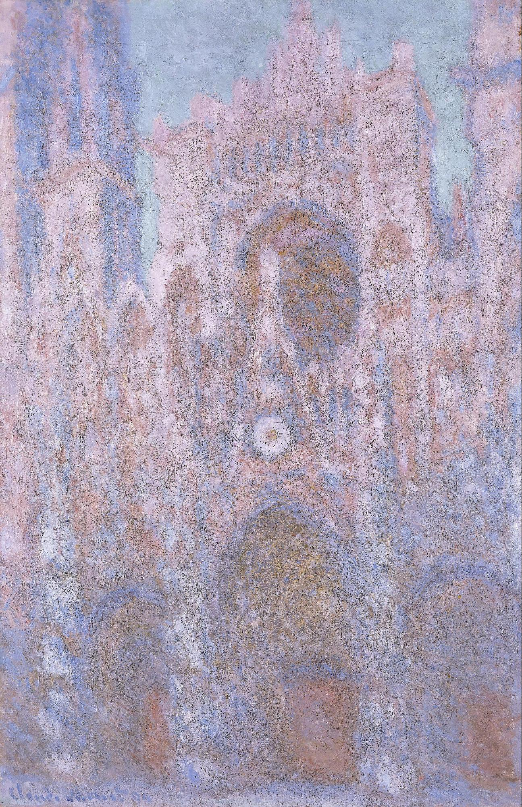
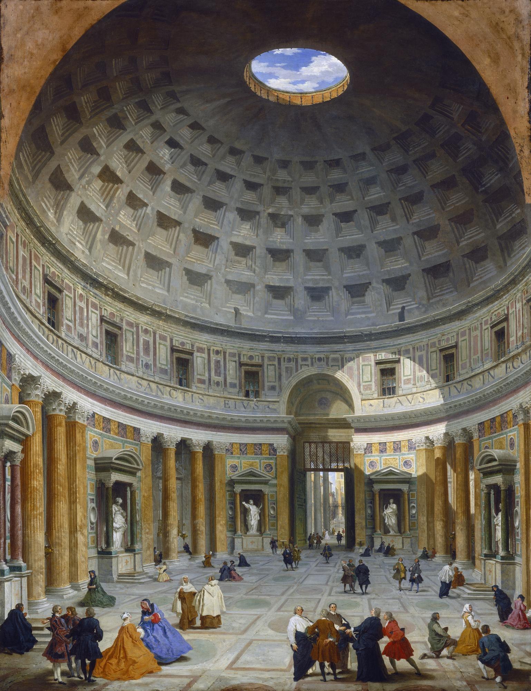

單元四的七堂課，今天收成七個帶得走的問題，拿去看同一個地方在一天裡的三種光。主例是 Claude Monet 在 1892 與 1893 年春天對著盧昂大教堂畫的系列，從同一扇窗看同一面石牆，畫了二十多張；對照的是羅馬萬神殿，一座只靠屋頂一個圓洞進光的建築。練習 30 分鐘，分三次做：早上、中午、晚上各回到同一個角落一次。
史料（依二手文獻：Scott C. Allan，〈The Portal of Rouen Cathedral in Morning Light〉，J. Paul Getty Museum 線上學術專文，2009 年撰、2012 年修訂） 1892 年 2 月到 4 月，Monet 待在諾曼第的盧昂，對著大教堂西側立面作畫。他先借了廣場 31 號一家襯衫店樓上的公寓，幾乎正對著立面，畫了大約兩週；之後搬到幾戶之外、23 號一位商人的店裡，角度斜一些。隔年同樣是 2 月到 4 月，他又回來，這次在 Grand-Pont 街 81 號一間店的樓上，位置再往右移。專文作者推測，他刻意選同一段季節，是為了讓兩年的光線條件接近。
Allan 描述他的工作方式：一天之中，光一變，他就換一張畫布，有時一天在十幾張之間輪流。進度一直不順。1893 年 2 月 22 日，他寫信給 Alice，抱怨這座大教堂難畫得要命；4 月 7 日又寫，說他要這批大教堂非常好。Getty 專文統計，他畫這面西立面一共 28 次；其他來源說法從 28 到「三十多張」不等。
這個故事的重點在一個簡單的安排：牆不動，人不動，窗不動，只有光在變。今天的練習也照這個安排來做，只是畫布換成手機，大教堂換成你家的一個角落。
把第 023 到 029 堂收成七個問題（見圖 1）。每一條附上出處與證據強弱，細節請回看各堂，各堂查核過的來源列在文末。

圖 1｜單元四的七個觀察問題，括號內為對應的課堂與主要來源。來源：本課程依第 023–029 堂所引 Baxandall（1995）、Appia（1899，依 Palmer 2015）、Goethe（1810，Eastlake 1840 英譯）、Chevreul（1839）、Albers（1963）、Fotios（2017）、Bordwell & Thompson《Film Art》（依二手文獻）繪製。授權：本課程自製圖解。
一、影子落在哪裡、是哪一種？（第 023 堂）經典理論＋實證研究 Baxandall 在《Shadows and Enlightenment》（1995）把影子分成三種：物體投到別處的投影、物體背光那一面的自身陰影、表面因為傾斜角度不同而產生的明暗。投影需要一個承接它的表面。實驗方面，Ramachandran 1988 年提出人預設「光從上方來、只有一個光源」（依 Proulx 2014 轉述），Proulx 2014 的實驗則發現，真實環境的照明會改變這個判斷。
二、光在照亮，還是在塑形？（第 024 堂）經典理論，依二手文獻 Appia 在《Die Musik und die Inscenierung》（1899）把舞台光分成兩種：只讓東西被看見的分散光，以及有方向、會投下影子、把身體和空間「塑」出來的光（依 Palmer 2015）。他列出光可以控制的四項：光束的大小與形狀、強度、顏色、方向，其中方向最關鍵。
三、影子是什麼顏色？（第 025 堂）經典理論 Goethe《Zur Farbenlehre》（1810）第 65 段描述黃昏時的實驗：一邊是蠟燭，一邊是天光，物體投下的影子會呈藍色。他的解釋是眼睛在影子裡補上了顏色。這是 Goethe 的觀察與主張；第 025 堂也提過，他對牛頓的論戰在物理上沒有成立。
四、旁邊是什麼顏色？（第 026 堂）經典理論＋實證研究 Chevreul 1839 年提出同時對比：兩個顏色並排，色相和明暗都會盡量互相推開，每個顏色都像被加上鄰色的補色。Shevell 與 Kingdom 2008 年的回顧提醒，這只能當第一步估計，實際效果還受圖案大小與排列影響。
五、你預設的是哪一種光？（第 027 堂）經典理論＋實證研究 Albers《Interaction of Color》（1963）主張顏色是最相對的媒材，同一個顏色換了底色就像另一個顏色。Lafer-Sousa 等人 2015 年的「洋裝」研究中，1,401 位受試者對同一張照片的顏色判斷分成幾派，研究者用每個人預設的光源不同來解釋。
六、夠不夠亮？色溫是另一顆旋鈕（第 028 堂）實證研究 Kruithof 1941 年那張「照度與色溫的舒適區」圖，原始資料沒有發表。Fotios 2017 年篩出 9 篇可信的後續研究，重畫資料後發現：2500 到 6500 K 之間，色溫對舒適感的影響可以忽略；照度低於約 300 lux 時可能被評為不舒服。亮和暖是兩件分開的事。
七、品質、方向、光源、顏色（第 029 堂）經典理論，依二手文獻 Bordwell 與 Thompson 的《Film Art》把銀幕上的光拆成四個特徵：品質（硬光的影子邊緣清楚，柔光的影子邊緣模糊）、方向（正面、側面、逆光、底光、頂光）、光源（主光、補光、逆光）、顏色。
七條裡，有實驗支持的是第一、四、五、六條，而且實驗結果都比原本的說法保守；第二、三、七條是理論家或教科書的分類。練習時，把它們當成一份檢查表，一條一條問。
拿兩張從幾乎同一個角度畫的立面來比。

圖 2｜Claude Monet，〈Rouen Cathedral, West Façade, Sunlight〉，1894 年，畫布油畫，100.1 × 65.8 公分，National Gallery of Art（Washington）藏，Chester Dale Collection，編號 1963.10.179。來源：Claude Monet，Rouen Cathedral, West Façade, Sunlight，1894。授權：Public domain，來源頁面
史料（Wikimedia Commons 上 National Gallery of Art 捐贈的檔案頁；館方網站本次連線遭拒） 第一張是華盛頓國家藝廊的〈Rouen Cathedral, West Façade, Sunlight〉，右下角簽名寫著 Claude Monet '94（見圖 2）。

圖 3｜Claude Monet，〈Rouen Cathedral: setting sun (symphony in grey and black)〉，1892–1894 年，畫布油畫，100 × 65 公分，Amgueddfa Cymru（威爾斯國家博物館，Cardiff）藏，編號 NMW A 2482。Commons 檔名寫作 Symphony in Grey and Pink，館方紀錄為 grey and black。來源：Claude Monet，Rouen Cathedral: setting sun，1892–1894。授權：Public domain，來源頁面
史料（Amgueddfa Cymru 線上典藏紀錄） 第二張在威爾斯的卡地夫，館方標題是〈Rouen Cathedral: setting sun (symphony in grey and black)〉（見圖 3）。館方說明：Monet 1892 年 2 月從一家帽店的窗口開始這個系列，1893 年回到盧昂，1893 到 1894 年在 Giverny 完成；這張是 1895 年在巴黎展出的二十張「大教堂」之一；Gwendoline Davies 1917 年 12 月在巴黎買下它。
以下是我對兩張畫的觀察，用圖 1 的問題逐條比對，畫家本人沒有留下這樣的說明。
光在照亮還是在塑形（問題二、七） 圖 2 的立面幾乎整面是奶油色和淡黃，門洞、玫瑰窗和尖塔之間的凹處則塗成藍紫和橙粉。亮面與凹處分得很開，雕飾的層次靠這個差距讀出來。圖 3 整面罩著一層粉紫，亮處和凹處的差距小很多，尖塔的輪廓和天空幾乎融在一起。用 Appia 的話說，圖 2 的光比較像在塑形，圖 3 的光比較接近只讓東西被看見的分散光。
影子是什麼顏色（問題一、三） 兩張畫裡都找不到黑色或深褐的影子。門洞內部、扶壁背光的一面，用的是藍、紫和帶粉的橙。這和 Goethe 第 65 段描述的「藍色影子」可以並排看，但要小心：Goethe 談的是蠟燭和天光兩種光同時存在時的現象，我們不知道 Monet 有沒有讀過 Goethe，也不能說他在「應用」這段理論。能確定的只有畫面本身：Monet 把影子畫成藍紫和橙粉。他依據的是現場觀察還是哪一套理論，畫面無法回答。
旁邊是什麼顏色（問題四、五） 看兩張畫的天空。圖 2 頂端是飽和的藍，襯得下面的奶油色立面更暖；圖 3 的天空是淡淡的青灰，和粉紫的石頭互相襯托。畫的是同一面牆，畫面上卻一張偏黃、一張偏粉。這正是 Albers 說的：同一個東西，換了周圍的光和顏色，看起來就換了一個顏色。
品質與方向（問題七） 圖 2 的筆觸很厚，顏料堆疊成粗糙的表面，亮處的邊緣清楚，比較像硬光；圖 3 的邊緣全部被一層薄霧般的筆觸軟化，比較像柔光。兩張的光從哪一側來，從畫面上很難確定，這裡就不硬猜。
要保留的疑點 Getty 專文指出，Monet 回到 Giverny 的畫室後大幅修改這批畫：加強光的效果、加深陰影、把主色和它的補色並排，還把幾張畫統一成相近的主色調，讓原本特定的天氣效果變得模糊。所以這兩張畫是經過整理的光，不是某天某時的記錄。標題裡的「陽光」「夕陽」，也比較接近 Monet 為整組畫做的分類。
實證研究（Robert Hannah 與 Giulio Magli，〈The role of the sun in the Pantheon's design and meaning〉，Numen 58(4): 486–513，2011；arXiv 預印本 0910.0128） Monet 讓光在一面牆上變；羅馬萬神殿則讓光在一個房間裡走。萬神殿的圓頂直徑 43.3 公尺，頂端有一個 8.3 公尺寬的圓洞（oculus），這是室內唯一的直射光源：大門朝北，一年之中陽光都照不進門。兩位作者指出，大部分時候，這棟建築給人一種冷而暗的印象。
他們用幾何模型追蹤圓洞投下的光斑：每天光斑由西往東畫出一道弧。秋天和冬天，正午的光斑一直留在圓頂上；春分之後慢慢往下，大約 4 月 21 日照滿入口；4 月底到 8 月底，中午前後光斑會落到地板上移動。4 月 21 日是傳統的羅馬建城紀念日，作者據此推論這道光有象徵意義。他們也明確說，不認為這棟建築是拿來精確計時的。這是兩位學者的論證，不是古代文獻的記載：論文本身提到，羅馬時代只有兩份文獻提過萬神殿。

圖 4｜Giovanni Paolo Panini，〈Interior of the Pantheon, Rome〉，約 1734 年，畫布油畫，128 × 99 公分，National Gallery of Art（Washington）藏，Samuel H. Kress Collection，編號 1939.1.24。來源：Giovanni Paolo Panini，Interior of the Pantheon, Rome，約 1734。授權：CC0（國家藝廊開放典藏），來源頁面
史料（Wikimedia Commons 上國家藝廊捐贈的檔案頁） 十八世紀的 Panini 畫過萬神殿內部（見圖 4）。畫家站在室內，面向入口；圓洞裡是藍天和白雲，入口上方的銅格柵也畫了出來，就是論文說春分後可以從門外望見光斑的那道格柵。
拿第 023 堂的問題來看這張畫：圓頂左半邊比右半邊亮，格子天花板（coffer）的每一格都是一側亮、一側暗，這是 Baxandall 說的傾斜造成的明暗，整座圓頂的弧度就是靠這一格一格的明暗變化讀出來的。畫裡沒有一個清楚的圓形光斑，Panini 畫的是哪個季節、哪個時刻，畫面無法告訴我們。這張畫放在這裡，是讓你看見那個圓洞和那道格柵，光斑一天怎麼走，要靠上面的論文。
Monet 和萬神殿用兩種方法處理一天的光。Monet 固定牆和視點，讓光的顏色和軟硬改變整面牆的樣子。萬神殿把光收窄成一個圓洞，讓光斑的位置本身變成時間的記號。今天的練習兩種都會用到：你會記下同一個角落顏色的變化，也會記下影子的位置。
誤解一：Monet 的大教堂是某天某時的「光線記錄」。依 Getty 專文，這批畫大多在 1894 年於 Giverny 畫室重新加工，Monet 還刻意把幾張統一成相近的主色調，讓特定的天氣效果變模糊。它們是根據現場觀察、再經過整理的作品。
誤解二：Monet 照著 Chevreul 的色彩對比理論作畫。第 026 堂引 Molnar 1997（依二手文獻）：點描派的 Seurat 讀過 Chevreul 並嘗試應用，但 Molnar 認為印象派畫家並不知道 Chevreul 的研究。看到 Monet 把補色並排，可以用 Chevreul 的語言描述效果，但不能據此說他在套用理論。
誤解三：萬神殿是一座巨大的日晷或曆法裝置。一些通俗文章這樣寫，但 Hannah 與 Magli 自己說，他們不認為這棟建築是用來計時的，他們主張的是象徵上的連結：太陽在特定日子照亮特定的位置。
誤解四：傍晚的暖光一定讓人放鬆，中午的冷光一定讓人清醒。第 028 堂談過，Fotios 2017 整理的可信研究中，2500 到 6500 K 之間的色溫對舒適評分影響很小，照度的影響比較穩定。生理節律是另一個題目，不能拿來當成這句話的證據。
單元練習，總長 30 分鐘，分成三個時段完成。只用手機、紙筆、一張白紙、一支鉛筆和一個杯子。地點選一個白天有自然光照進來的角落：窗台、靠窗的桌角、陽台的牆邊都可以。
看（5 分鐘，早上做） 選好角落，把杯子放在白紙上，白紙放在固定位置，用鉛筆在紙上畫出杯底的輪廓，之後每次都放回同一個位置。站在固定的一點，記下你的腳站在哪塊地磚或哪條線上。先不拍照，看 5 分鐘，在紙上寫下：杯子的投影落在哪個方向、杯子背光那面是什麼顏色、白紙看起來是白、偏黃還是偏藍。
做（20 分鐘，分三次）
回顧（5 分鐘）
本堂新查核的來源
來源 | 來源類型 | 查核日期 |
史料（依二手文獻：學術專文） | 2026-11-26 | |
Amgueddfa Cymru 線上典藏：Monet，Rouen Cathedral: setting sun (symphony in grey and black)，NMW A 2482 | 史料（典藏紀錄） | 2026-11-26 |
Wikipedia：Rouen Cathedral (Monet series)（系列總數、1895 年展出二十張；僅作索引） | 二手文獻 | 2026-11-26 |
實證研究（考古天文學論文） | 2026-11-26 | |
Wikimedia Commons：National Gallery of Art 捐贈檔案頁，Rouen Cathedral, West Façade, Sunlight（尺寸、編號、簽名、館藏） | 史料（典藏著錄） | 2026-11-26 |
圖片授權 | 2026-11-26 | |
圖 3 授權頁：Wikimedia Commons（Public domain，來源標為 Amgueddfa Cymru） | 圖片授權 | 2026-11-26 |
圖片授權／史料 | 2026-11-26 | |
National Gallery of Art 典藏頁（本次連線遭拒 403，未能開啟，列出供讀者自行查看同系列另一張〈West Façade〉） | 史料（未開啟） | 2026-11-26 |
前幾堂已查核、本堂沿用的來源
來源 | 來源類型 | 查核日期 |
Yale University Press：Michael Baxandall，Shadows and Enlightenment，1995 | 經典理論 | 2026-11-19 |
Proulx，The perception of shape from shading in a new light，PeerJ 2:e363，2014（含 Ramachandran 1988 轉述） | 實證研究 | 2026-11-19 |
史料（學術論文，Appia 依此轉述） | 2026-11-20 | |
Goethe，Theory of Colours，Charles Lock Eastlake 英譯，1840（第 65 段） | 經典理論 | 2026-11-21 |
Chevreul，The Principles of Harmony and Contrast of Colours，Charles Martel 英譯 | 經典理論 | 2026-11-22 |
Shevell & Kingdom，Color in Complex Scenes，Annual Review of Psychology 59，2008 | 實證研究 | 2026-11-22 |
Molnar，Le contraste simultané dans les arts visuels，1997（Chevreul 與印象派） | 二手文獻 | 2026-11-22 |
Josef Albers，Interaction of Color，Yale University Press（50 週年版） | 經典理論 | 2026-11-23 |
實證研究 | 2026-11-23 | |
Steve Fotios，A Revised Kruithof Graph Based on Empirical Data，LEUKOS 13(1)，2017 | 實證研究（回顧） | 2026-11-24 |
Glossary of Film Terms（UC Irvine，定義引自 Bordwell & Thompson，Film Art 第 7 版） | 經典理論（依二手文獻） | 2026-11-25 |
延伸閱讀：Getty 的 Allan 專文附有 Monet 三個作畫位置的說明，讀完再看各館收藏的大教堂系列，可以試著判斷每一張是從哪一扇窗畫的。Hannah 與 Magli 的論文在 arXiv 可免費閱讀，文中的圖示畫出了光斑一年中的位置。